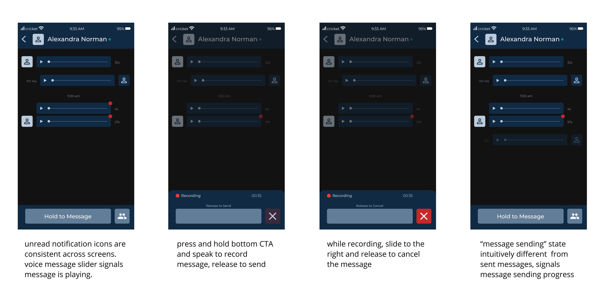
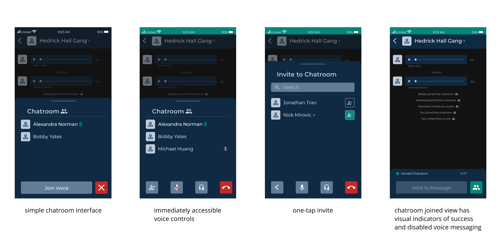

I was the sole contributor to this design case. I conducted my own research and made all visual and interaction designs.
Texting and driving is a leading cause of death in the U.S.
It is also completely preventable. However, it is naive to think that ad campaigns and fines alone can prevent addictive texting behavior in young adults from hitting the road.
We need to rethink our means of digital communication and redesign the messaging experience with the expectation that some people will inevitably text and drive.
1. Active Screen Attention
Reading and composing text messages require active screen attention for many
seconds at a time, which is highly dangerous while operating a fast-moving
vehicle. Also, texting with one hand is significantly slower than texting
with both, exacerbating the distraction time. This redesign must reduce
active screen time to ~0 seconds and make it easy to send messages with one
hand.
2. Familiar UI
User behavior in messaging is already deeply engrained in smartphone users.
Instead of creating an entirely new messaging experience, I chose to
leverage existing behaviors to help users comfortably learn and use the new
messaging platform. It is important for user to be able to perform core
messaging actions naturally.
3. Conversational
In redesigning the messaging experience, it is important to retain and
improve upon the core value of messaging apps - long-distance conversations.
This messaging app should be highly conversational and bring friends closer
together.
By designing a mobile messaging application that puts voice messaging first and is focused on one-hand use, users will find it more expressive and safer to use than text-centric messaging applications.
Sending and receiving voice messages is the core functionality of this app. The voice messaging feature was designed to be intuitive and familar with an emphasis on safety and one-hand use.
The chatroom feature brings users closer together through live voice communication. This is an essential feature that highlights the conversational nature of the app.
Moving forward, I would like to conduct usability tests on my designs in addition to broader group-psychology tests.
While conducting user research, I found many American testers felt awkward speaking out loud in public places just to message others. For this design to be successful, I need to assess both my app design and the psychological and societal friction against widespread voice messaging adoption in the States. Further exploration to come!